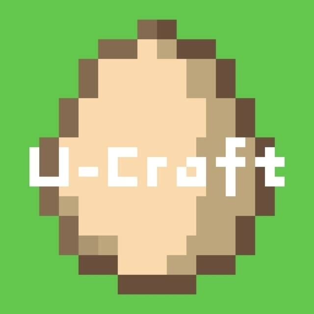

Welcome to Minecraft U-craftBE

About Our Server
We have been providing a stable and fun Minecraft environment for over 5 years.
Currently, we offer Survival Realm 1, Survival Realm 2, and a dedicated Mini-games server.
How to Join?
It's simple! Just read our server regulations, download the compatible client, and you're ready to play.
Server Rules
For detailed community guidelines and rules, please click here.
Reliable Performance
Powered by Intel i7-14700K for a lag-free gaming experience.
Community Events
We host regular in-game events and competitions. More surprises await!